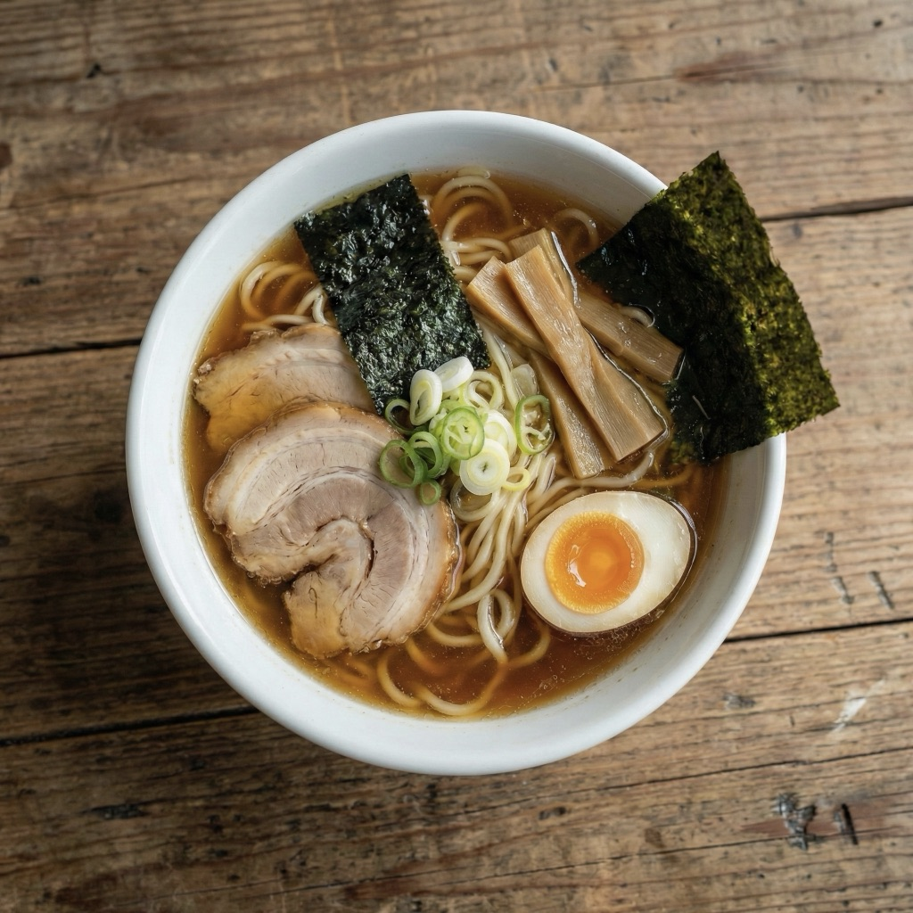

AI 한계 표시
FoodLens는 의료 진단이나 전문 영양 상담을 대체하지 않습니다. 불확실한 결과는 확인 필요로 표시합니다.
AI food safety assistant
FoodLens는 음식, 라벨, 바코드 이미지를 분석해 알레르기 주의 정보와 성분 맥락을 이해하도록 돕습니다. 최종 판단을 대신하지 않고, 먹기 전에 확인할 신호를 더 빠르게 보여줍니다.
AI 분석은 보조 정보입니다. 결과가 불확실하면 라벨, 매장 직원, 전문가 확인을 우선하세요.

달걀 후보 밀 성분 확인 간장 베이스 내 기준: 우유 위험Scan reveal
How it works
FoodLens는 복잡한 성분 정보를 단정적인 답으로 줄이지 않습니다. 촬영, 분석, 개인 프로필 대조, 다음 확인 행동까지 이어지는 판단 보조 흐름을 제공합니다.
음식 사진, 포장 라벨, 바코드를 앱에서 촬영하거나 이미지로 선택합니다.
AI가 보이는 성분, 라벨 텍스트, 후보 알레르겐을 추출하고 불확실한 항목을 표시합니다.
등록한 알레르기와 식이 제한을 기준으로 위험, 주의, 확인 필요 상태를 구분합니다.
Personal Safety Lens
같은 음식도 사용자 알레르기 프로필에 따라 다르게 해석되어야 합니다. FoodLens는 “좋음/나쁨” 점수보다 나에게 해당되는 주의 신호와 이유를 먼저 보여줍니다.
내 알레르기 프로필
프로필은 분석 결과를 개인화하기 위해 사용되며, 언제든지 수정하거나 삭제할 수 있습니다.
샘플 결과
Travel readiness
해외여행 중에는 메뉴 이름, 현지 언어, 라벨 표기가 모두 낯설 수 있습니다. FoodLens는 여행자 카드와 스캔 히스토리로 현장에서 다시 확인할 수 있는 정보를 정리합니다.
Tokyo trip
출국 전 프로필과 여행자 카드를 준비하고, 현지 음식명은 스캔 히스토리에 저장해 다시 확인하세요.
Traveler card
저는 우유와 땅콩 알레르기가 있습니다.
Does this contain milk or peanuts?
Trust and privacy
FoodLens는 민감한 알레르기 프로필과 음식 이미지를 다룰 수 있습니다. 그래서 분석 근거, AI 한계, 데이터 제어 방법을 홈페이지에서도 짧고 명확하게 안내합니다.
FoodLens preview
FoodLens 결과는 최종 판단이 아니라 확인을 돕는 정보입니다. 사용자가 더 빨리 확인하고, 더 명확하게 질문하고, 자신의 기준으로 결정을 내릴 수 있도록 돕습니다.